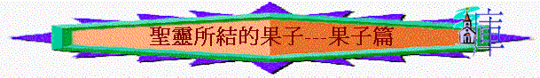

引言：果子是人在地上作工，經一段時間而有的出產與果效，是可以感受，是可以見到，而聖經也引用地上的果子來表達在屬靈上的果效與表現
一.聖經題及果子的種類
1.救恩的果子
A.成聖的果子
「但現今，你們既從罪裡得了釋放，作了神的奴僕，就有成聖的果子，那結局就是永生。」羅6:22
∼人從罪中得釋放，成為分別出來，歸於神的果子
B.聖靈初結的果子
「不但如此，就是我們這有聖靈初結果子的，也是自己心裡歎息，等候得著兒子的名分，乃是我們的身體得贖。」羅8:23
「又問在他們家中的教會安。問我所親愛的以拜尼土安；他在亞西亞是歸基督初結的果子。」羅16:5
∼第一批剛相信主的人，他們因聖靈的工作與感動信主
C.初熟的果子
「但基督已經從死裡復活，成為睡了之人初熟的果子。」林前15:20
∼指耶穌先復活，成為後來信主人的初熟果子
D.生命樹的果子
「聖靈向眾教會所說的話，凡有耳的，就應當聽！得勝的，我必將神樂園中生命樹的果子賜給他吃。』」」啟2:7
∼將來在新天新地中，信的人吃了必不受第二次死，必有永遠的生命
2.聖工的果子
A.成就神工夫的果子
「但我在肉身活著，若成就我工夫的果子，我就不知道該挑選什麼。」腓1:22
∼指保羅在地上作工，成就神交託給他使命，帶來的果效
B.傳福音的果子
「弟兄們，我不願意你們不知道，我屢次定意往你們那裡去，要在你們中間得些果子，如同在其餘的外邦人中一樣；只是到如今仍有阻隔。」羅1:13
∼應指主吩咐他們去使人作主門徒，作傳福音的工作，主的門徒就是果子
3.生命的果子
A.與悔改的心相稱之果子
「約翰看見許多法利賽人和撒都該人也來受洗，就對他們說：「毒蛇的種類！誰指示你們逃避將來的忿怒呢？你們要結出果子來，與悔改的心相稱。」太3:7-8
「你們要結出果子來，與悔改的心相稱。不要自己心裡說：『有亞伯拉罕為我們的祖宗。』我告訴你們，神能從這些石頭中，給亞伯拉罕興起子孫來。」路3:8
∼此果子指悔改後應有的表現，不是單有悔改而沒有相應的行為及表現
a.幫助有需要的人
「眾人問他說：「這樣，我們當作什麼呢？」約翰回答說：「有兩件衣裳的，就分給那沒有的；有食物的，也當這樣行。」」路3:10-11
b.不再行不義的事
「又有稅吏來要受洗，問他說：「夫子，我們當做什麼呢？」約翰說：「除了例定的數目，不要多取。」又有兵丁問他說：「我們當做什麼呢？」約翰說：「不要以強暴待人，也不要訛詐人，自己有錢糧就當知足。」」路3:12-14
(1)不多取
(2)不訛詐
(3)不欺人
(4)不貪心
B.仁義的果子
「那賜種給撒種的，賜糧給人吃的，必多多加給你們種地的種子，又增添你們仁義的果子；」林後9:10
C.光明所結的果子
「從前你們是暗昧的，但如今在主裡面是光明的，行事為人就當像光明的子女。光明所結的果子就是一切良善、公義、誠實。」弗5:8-9
∼我們在主裡如光明的子女，所結的果子(意思是應有的特質及表現)是一切良善(Goodness)、公義(Righteousness)、誠實(Truth)
D.平安的果子
「凡管教的事，當時不覺得快樂，反覺得愁苦；後來卻為那經練過的人結出平安的果子，就是義。」來12:11
∼人在被管教後，由當時覺得不快樂，後產生平安，而至終會有義的成效
E.嘴唇的果子
「我們應當靠著耶穌，常常以頌讚為祭獻給神，這就是那承認主名之人嘴唇的果子。」來13:15
F.認識基督上的果子
「神的神能已將一切關乎生命和虔敬的事賜給我們、皆因我們認識那用自己榮耀和美德召我們的主。」彼後1:3
「正因這緣故、你們要分外的殷勤．有了信心、又要加上德行．有了德行、又要加上知識．有了知識、又要加上節制．有了節制、又要加上忍耐．有了忍耐、又要加上虔敬．有了虔敬、又要加上愛弟兄的心．有了愛弟兄的心、又要加上愛眾人的心。你們若充充足足的有這幾樣、就必使你們在認識我們的主耶穌基督上、不至於閒懶不結果子了。」彼後1:5-8
∼人因認識基督而生命可以擁有及追求彼後1:5-7生命的果子
G.聖靈所結的果子
「聖靈所結的果子，就是仁愛、喜樂、和平、忍耐、恩慈、良善、信實、溫柔、節制。這樣的事沒有律法禁止。」加5:22-23
a.是從聖靈來的
b.是一個果子:英文譯 “the fruit of the
Spirit is love ,joy, peace……….”
c.有九種特質，不能分割的
d.不受律法所抑制的
二.結出生命果子的重要
1.分辨真偽
「好樹不能結壞果子；壞樹不能結好果子。凡不結好果子的樹就砍下來，丟在火裡。所以，憑著他們的果子就可以認出他們來。」」太7:18-20
2.配作主徒
「你們多結果子，我父就因此得榮耀，你們也就是我的門徒了。」約15:8
3.禱告蒙允
「不是你們揀選了我，是我揀選了你們，並且分派你們去結果子，叫你們的果子常存，使你們奉我的名，無論向父求什麼，他就賜給你們。」約15:16
4.父得榮耀
「你們多結果子，我父就因此得榮耀，你們也就是我的門徒了。」約15:8
5.堅定不移
「你們若充充足足的有這幾樣，就必使你們在認識我們的主耶穌基督上不至於閒懶不結果子了。」彼後1:8
「所以弟兄們，應當更加殷勤，使你們所蒙的恩召和揀選堅定不移。你們若行這幾樣，就永不失腳。這樣，必叫你們豐豐富富的得以進入我們主救主耶穌基督永遠的國。」彼後1:10-11
6.向神交賬
「現在斧子已經放在樹根上，凡不結好果子的樹就砍下來，丟在火裡。」太3:10
「我的弟兄們，這樣說來，你們藉著基督的身體，在律法上也是死了，叫你們歸於別人，就是歸於那從死裡復活的，叫我們結果子給神。」羅7:4
7.終得賞賜
「所以我告訴你們，神的國必從你們奪去，賜給那能結果子的百姓。」太21:43
三.結豐盛果子的方法
1.歸於基督
「我的弟兄們，這樣說來，你們藉著基督的身體，在律法上也是死了，叫你們歸於別人，就是歸於那從死裡復活的，叫我們結果子給神。」羅7:4
2.常在主裡
「你們要常在我裡面，我也常在你們裡面。枝子若不常在葡萄樹上，自己就不能結果子；你們若不常在我裡面，也是這樣。」約15:4
3.殷勤追求
「正因這緣故，你們要分外的殷勤；有了信心，又要加上德行；有了德行，又要加上知識；」彼後1:5
4.要願結果
「凡屬我不結果子的枝子，他就剪去；凡結果子的，他就修理乾淨，使枝子結果子更多。」約15:2
5知神旨意
「好叫你們行事為人對得起主，凡事蒙他喜悅，在一切善事上結果子，漸漸的多知道神；」西1:10
6.聖靈工作
「聖靈所結的果子，就是仁愛、喜樂、和平、忍耐、恩慈、良善、信實、」加5:22
7.順聖而行
「我說，你們當順著聖靈而行，就不放縱肉體的情慾了。」加5:16
「但你們若被聖靈引導，就不在律法以下。」加5:18
∼在聖靈中行走，順服聖靈的引導，行在聖靈的意思中
8.受主修剪
「凡屬我不結果子的枝子，他就剪去；凡結果子的，他就修理乾淨，使枝子結果子更多。」約15:2
「凡管教的事，當時不覺得快樂，反覺得愁苦；後來卻為那經練過的人結出平安的果子，就是義。」來12:11
四.結豐盛果子的難阻---放縱肉體的情慾
「我說，你們當順著聖靈而行，就不放縱肉體的情慾，因為情慾和聖靈相爭，聖靈和情慾相爭，這兩個是彼此相敵……情慾的事，都是顯而易見的，就如姦淫、污穢、邪蕩、拜偶像、邪術、仇恨、爭競、忌恨、惱怒、結黨、紛爭、異端、嫉妒、醉酒、荒宴等類……」加5:16-21
聖經題及「相爭」、「相敵」、原來在我們屬靈生命裡有一個敵人，和聖靈作對，影響我們結不出美好生命的果子，就是「情慾」；「情慾」原來是神賜給人一份很好的禮物，人若沒有了情慾，就如活死人一樣，冰冷，沒感覺的，但人若不好好運用情慾，放縱它，就會成了「邪情私慾」，得罪神，所以聖經題醒我們不要放縱這個死敵--
---肉體的情慾，相反要順聖靈而行，就能得勝；究竟這個死敵的本相是怎樣呢？作為神的兒女又如何得勝它呢？
1.放縱à自然性慾
「性」本身是好的，但若任憑它，不控制它，就成了「姦淫、污穢、邪蕩」，我們要攻克己身，要己身服我：自己時常題醒自己，即使如大衛，有了家庭又屬靈，但若不儆醒，也會在這方面出錯；我們也要儆醒，要順聖靈而行，沒有污穢，反結出「良善」，不放縱，反而結出「節制」果子。
2.放縱à崇拜傾向
人類本身有一種慾念，是動物界沒有的，就是「崇拜」、「宗教」傾向，在此若扭曲了這崇高情意，就變成『拜偶像、邪術』，當然我們基督徒應沒有拜偶像的，但在生活，心中會否出現了神與人之間的「第三者」，我崇拜了某些東西，某些人物多過神呢？聖經教導我們要聽聖靈引導，要結「信實」果子。對我們的主一生一世忠誠，忠於祂，除祂以外，不能接受有『第三者』，我們有否這堅定心志？
3.放縱à情緒宣洩
人一出生就會發怒，會宣洩自己的情緒，但若放任它，加上了「恨意」，就成了「仇恨、爭競、忌恨、惱怒」，但時我們要「治服己心，不輕易發怒』，不要令它過份積蓄，含怒到日落，否則會影響我們與家人、團友、同事相處；聖經教我們若多了「愛人如己」的愛，多順聖靈結「仁愛」、「喜樂」、「和平」、「忍耐」、「溫柔」、「恩慈」的果子時，怒氣自然消退。
4.放縱à追求認同
每個人都想在人群中被人認同，別人知道自己的存在，不過聖經郤叫我們不要貪圖虛名，否則，會因過份追求名，而產生「結黨、紛爭、異端、嫉妒」的惡果，有些人在教會中不開心的原因，是覺得被人忽略了意見，人不尊重自己，某些肢體得人留意，自己郤被冷落，而令自己不開心，也結不出真正「喜樂」的果子！
5.
放縱à肉體滿足
人可以喜歡享受神所賜的美食，但也要節制，否則會落到聖經時代那種「醉酒、荒宴」光景，神賜的食物本是美，但不要被它所挾制，不要過份沉醉，荒廢寶貴光陰，也令身體受損；當然結不出節制果子了。
∼因此聖經題及我們的死敵就是因放縱而產生的情慾了，今天我們在生活中，有沒有放縱呢？聖經教導的們要節制，也要順聖靈而行，當情慾發動時，留意內裡聖靈的聲音，聖靈說要「停」，就順聖靈而行，當然人也有軟弱，但我們不可喪志，若不灰心，到了時候，就要收成，失敗了，求主憐憫饒恕，重新努力，勝過它，以致我們的生命可以滿有聖靈所結的果子！努力！
軟弱，但我們不可喪志，若不灰心，到了時候，就要收成，失敗了，求主憐憫饒恕，重新努力，勝過它，以致我們的生命可以滿有聖靈所結的果子！努力！